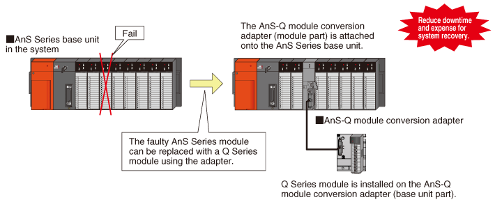
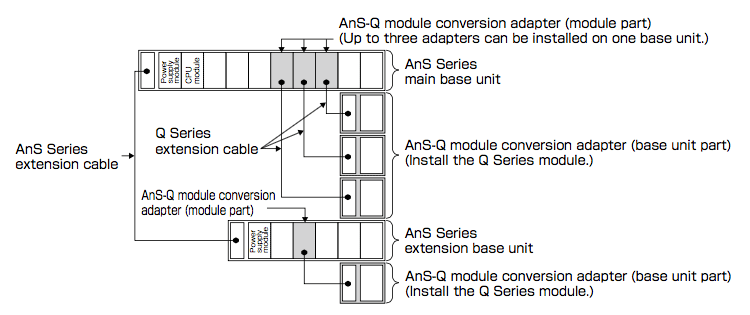

Products
MELSEC-A Series Product Renewal
Substitute a faulty module with a Q Series module
AnS-Q Module Conversion Adapter
Supported series:
The Q Series module replacing a faulty AnS Series module
Q Series I/O and intelligent function modules can be installed on an AnS Series base unit.
This enables to build a system using a Q Series module with the existing system remains unaltered.

- Up to three AnS-Q module conversion adapters (module part) can be installed on one base unit.

AnS-Q Module Conversion Adapter
- A1SADP-Q-SET1
| Type | Model | Remarks |
|---|---|---|
| AnS-Q module conversion adapter (module part) | A1SADP-Q | — |
| AnS-Q module conversion adapter (base unit part) | A1SADP-Q51B | One-slot type |
- A1SADP-Q-SET2
For a module occupying 2 slots
| Type | Model | Remarks |
|---|---|---|
| AnS-Q module conversion adapter (module part) | A1SADP-Q | — |
| AnS-Q module conversion adapter (base unit part) | A1SADP-Q52B | Two-slot type*1 |
*1: A one-slot type module can be attached to the adapter, but one one-slot type module can be attached.
Supported models*
- Existing systems supporting the AnS-Q module conversion adapter (module part)
AnS Series: main base unit, extension base unit
QCPU (A mode): main base unit, extension base unit - CPU modules and remote I/O stations that support AnS-Q module conversion adapter
AnS Series: AnSCPU, QnASCPU, MELSECNET/B remote I/O station, MELSECNET/10 remote I/O station
Q Series: QCPU (A mode) - Q Series modules supporting the AnS-Q module conversion adapter (base unit part)
Input module, output module, I/O combined module, interrupt module, blank cover module, high-speed counter module, positioning module, A/D converter module, D/A converter module, temperature input module, temperature control module, serial communication module, AS-i master module, DeviceNet module, PROFIBUS-DP module.
*: Please refer to the product manual (IB(NA)-0800540E) for the details of the model identifications and restrictions.
- Extension cable
| Type* | Model |
|---|---|
| Q Series extension cable | QC05B, QC06B, QC12B, QC30B |
*: Necessary to connect the AnS-Q module conversion adapter (module part) with the AnS-Q module conversion adapter (base unit part).